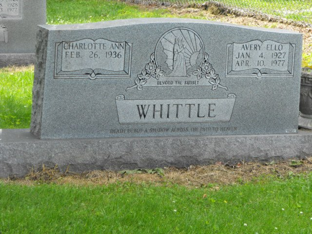

Whittle line · Eunice's first husband · Russell County, Kentucky, and New Castle, Indiana
Also known as: Ello Whittle (as named in the 1940 census and the family account); Avery E. Whittle; Avery Whittle
Profile status: DOCUMENTED his 1947 marriage to Eunice Brewster is in a Kentucky county marriage index that names her parents, Homer and Sarah Brewster; his birth, parents, Army service, second marriage and death rest on indexes, his obituary and his headstone
Ello as a young soldier, about 1946 (photo shared on Find a Grave by Matthew Dion Whittle).
Quick Facts
Born
4 January 1927, Russell County, Kentucky SUPPORTED The Kentucky birth index, his headstone and the Social Security Death Master File all give 4 January 1927. His VA file gives 26 July 1926, and his 1947 marriage record gives his age as 22, so the date is not fully settled.
Parents
Stanton Bell Whittle (1892–1972) DOCUMENTED Louvenia M. (McGowan) Whittle (1900–1940) SUPPORTED His 1947 marriage record names his parents as Stanton and Lavina Whittle, and the 1940 census shows Ello, 13, in the household of his widowed father, Stanton B. Whittle. The Kentucky birth index gives his mother as Louena McGoward; Find a Grave gives Louvenia M. McGowan.
Military
United States Army, 5 January 1946 – 9 July 1947 DOCUMENTED VA (BIRLS) index and the World War II enlistment index.
Spouses
Eunice Edna (Brewster) Burton (1930–1987), married 23 July 1947 at Covington, Kenton County, Kentucky DOCUMENTED Charlotte Ann (Mulvey) Whittle (26 Feb 1936 – 27 May 2025) DOCUMENTED The Kentucky county marriage index gives Avery E. Whittle, 22, son of Stanton and Lavina Whittle, and Eunice Brewster, daughter of Homer and Sarah Brewster DOCUMENTED. Her age is given as 21, though she was 16. The family account always said Eunice married Ello Whittle first FAMILY ACCOUNT; this record confirms it. When the marriage ended is not known. His 1977 obituary and Charlotte's 2025 obituary name Charlotte as his wife DOCUMENTED.
Children
With Charlotte: Debra Smith, Cynthia, Loretta, Theresa (1965–2016), Robert, Jeffery, Michael, and Rebecca Jo (1967–1968)
Named in his 1977 obituary and Charlotte's 2025 obituary, which says they had eight children DOCUMENTED. No children of his marriage to Eunice are known UNPROVED. Living children are shown by name only.
Died
10 April 1977, aged 50, of New Castle, Indiana DOCUMENTED His obituary gives the date and his home at New Castle; Find a Grave gives the place of death as Indianapolis.
Buried
Whittle Cemetery, Russell County, Kentucky DOCUMENTED; Find a Grave memorial 71554504, under a double headstone with Charlotte His obituary says the burial was in Whittle Cemetery after a service at Bernard Funeral Home Chapel on 15 April 1977.
Immediate Family
Parents
Stanton Bell Whittle (1892–1972) DOCUMENTED Louvenia M. (McGowan) Whittle (1900–1940) SUPPORTED Named as Stanton and Lavina Whittle in his 1947 marriage record.
All with Charlotte, from his 1977 obituary, Charlotte's obituary and Find a Grave DOCUMENTED. None with Eunice is known.
Siblings
Anna M. (Whittle) Giles (1916–1938)
Iza Pearl (Whittle) Coffey (1920–1996)
Heasby Earl Whittle (1922–1923)
Shirley William Whittle (1923–1987)
Grace (Whittle) Eastham (1925–2018)
Ulissus Hue Whittle (1928–1929)
Marie (Whittle) Stacy (1930–2001)
Calvin Coolidge Whittle (1931–1996)
Norma Jean (Whittle) Wilson (1933–2017)
Gearlind Whittle (1936)
Veldean (Whittle) Beckner (1938–2020)
Linked as his siblings on Find a Grave SUPPORTED; the surviving brothers and sisters are named in his 1977 obituary and several appear with him in the 1940 census DOCUMENTED.
Date unknown The marriage ended; Eunice later used the names Taylor and Burton SUPPORTED
1950s–1960s Married Charlotte Ann Mulvey of Covington; they raised their family at New Castle, Indiana DOCUMENTED
10 Apr 1977 · age 50 Died, of New Castle, Indiana DOCUMENTED
15 Apr 1977 Buried, Whittle Cemetery, Russell County, Kentucky DOCUMENTED
Life Story
Avery Ello Whittle, known as Ello, was born on January 4, 1927, in Russell County, Kentucky, one of the many children of Stanton Bell Whittle and Louvenia McGowan. SUPPORTED His mother died in 1940, and that year's census found thirteen-year-old Ello at home with his widowed father and his brothers and sisters in the Russell County hills. DOCUMENTED He joined the Army in January 1946 and was discharged in July 1947. DOCUMENTED
Two weeks after leaving the Army, on July 23, 1947, he married sixteen-year-old Eunice Brewster, daughter of Homer and Sarah Brewster, across the river from Cincinnati at Covington, Kentucky. DOCUMENTED The marriage did not last. SUPPORTED Ello later married Charlotte Ann Mulvey of Covington, who remembered him as a persistent suitor, and they raised eight children at New Castle, Indiana. DOCUMENTED He fell ill in middle age and died on April 10, 1977, aged 50. He was carried home and buried in the Whittle family cemetery in Russell County. DOCUMENTED
Photo Gallery
Ello in his Army uniform, about 1946. Photo shared by Matthew Dion Whittle, Find a Grave

The double headstone he shares with Charlotte: "Avery Ello, Jan. 4, 1927 – Apr. 10, 1977 · Beyond the sunset." Photo by Janet Ward, Find a Grave
Sources and Evidence
Kentucky, County Marriages, 1786–1965, Avery E Whittle and Eunice Brewster, 23 Jul 1947 (FamilySearch): Covington, Kenton County, Kentucky; groom Avery E Whittle, 22, parents Stanton and Lavina Whittle; bride Eunice Brewster, 21, parents Homer and Sarah Brewster DOCUMENTED
United States Census, 1940, Ello Whittle (FamilySearch): age 13, born Kentucky, son of Stanton B. Whittle (46, widowed), Magisterial District 3, Russell County, Kentucky, with Gracy, Shirley, Imogene, Calvin, Norma G. and Veldene Whittle DOCUMENTED
VA Beneficiary Identification Records (BIRLS) and Social Security Death Master File, entries for Avery Ello Whittle / Avery Whittle, as transcribed by SortedByName: Army 5 January 1946 – 9 July 1947; died 10 April 1977; born 26 July 1926 (BIRLS) or 4 January 1927 (Death Master File); Kentucky birth index: Avery E. Whittle born 4 January 1927 to Louena McGoward, Russell County DOCUMENTED
Find a Grave, Avery Ello Whittle, memorial 71554504: 4 January 1927 – 10 April 1977, died Indianapolis; veteran; buried Whittle Cemetery, Russell County, Kentucky; links parents, spouses Eunice Edna Brewster Burton (m. 1947) and Charlotte Ann Mulvey Whittle, siblings and two children; Army portrait (Matthew Dion Whittle), headstone (Janet Ward) and a newspaper obituary clipping (Judy Lynn) (read 6 November 2026) SUPPORTED
Obituary of Avery Whittle, 1977 (newspaper clipping on Find a Grave): "Avery Whittle, 50, of New Castle, Indiana, died April 10, 1977"; names his wife Charlotte, four daughters, three sons, five sisters and two brothers; services 15 April at Bernard Funeral Home Chapel; "Interment was in Whittle Cemetery" DOCUMENTED
Obituary of Charlotte Ann (Mulvey) Whittle (1936–2025): married "a man named Avery Ello Whittle"; together they raised eight children at New Castle, Indiana; preceded in death by her husband Avery (read 6 November 2026) DOCUMENTED
Couple profile, Homer William Brewster Sr. × Sarah Hazel Kelly: Eunice "married first Ello Whittle, then Irvin Burton" FAMILY ACCOUNT
FamilySearch Family Tree, LTYQ-2Z1 (tree lead only) UNPROVED
Grades: DOCUMENTED an original record says it · SUPPORTED several records point to it · FAMILY ACCOUNT the family's own telling · UNPROVED a lead, not proved.
Research Notes and Open Questions
Identification: the family account names Eunice's first husband only as "Ello Whittle." The 1947 Covington marriage, which names her parents, ties her to Avery E. Whittle, son of Stanton Whittle, and the 1940 census names Stanton's son as Ello. A second man, Hollis Ello "Elno" Whittle (1931–1995) of Russell County, is a different person: his parents were James E. Whittle and Sola Owens, and he was 16 in 1947.
Birth date: 4 January 1927 (birth index, headstone, Death Master File) against 26 July 1926 (VA file). His Social Security application would settle it.
When and where the Whittle–Brewster marriage ended: try Kenton County, Kentucky, and Hamilton and Butler counties, Ohio, divorce records, about 1947–1955.
Whether he and Eunice had any children together is not known.
Find a Grave also holds a 1977 newspaper obituary clipping with a small photo of him; it is saved with his pictures but not shown here because it lists living people.
Ello's profile is filed in Eunice Burton's folder.
DNA
No DNA matches linked yet.
Profile history: Created 6 November 2026 with his identity as Avery Ello Whittle, birth, parents, Army service, 1947 marriage to Eunice Brewster, second marriage, death, burial, sources, Army portrait and headstone photo.